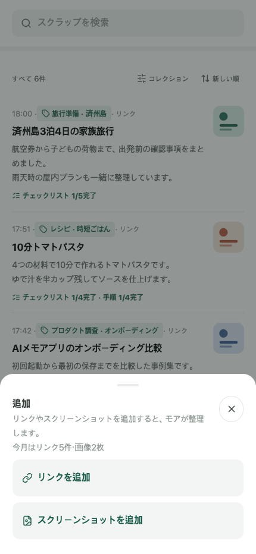
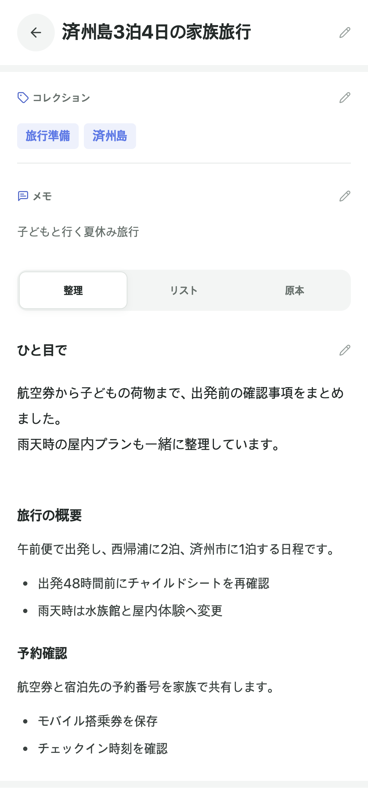
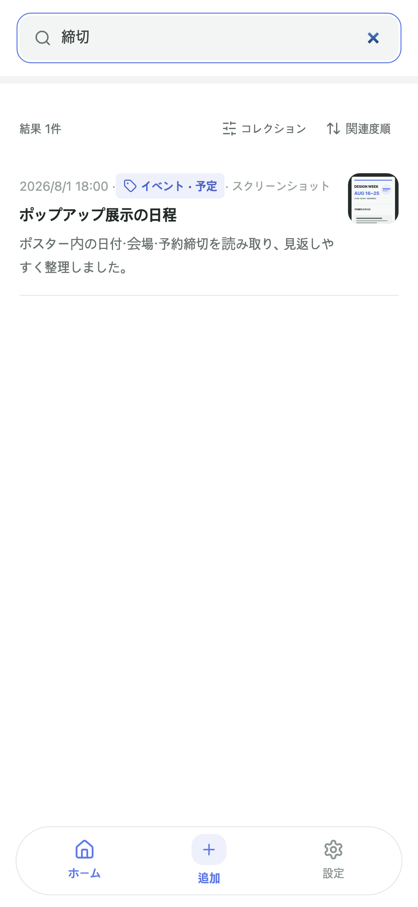

リンクまたは画像を保存
Webリンクも、写真アプリで選んだスクリーンショットも同じ画面から始められます。

旅行プラン、買い物の比較、仕事の資料、レシピ、運動記録まで。 あとで見ようと保存したリンクや画像をAIが読み取り、整理します。
アカウント登録は不要です。スクラップは端末と、選択した場合のみプライベートiCloudに保存されます。
保存から再発見まで
新しい整理習慣を作る必要はありません。MOAに保存し、AIの提案を確認して、 自分に合わせて直せば、原文と一緒に検索できます。
Webリンクも、写真アプリで選んだスクリーンショットも同じ画面から始められます。

分類、タイトル、要約、メモをすぐに直し、原文も一緒に保存できます。

覚えている言葉ひとつで、保存した内容をもう一度見つけられます。

ユーザー所有のデータ
元データは端末に保存されます。iCloud同期を有効にすると、同じApple Accountの プライベートiCloudにも同期されます。LuluLabsがスクラップを保管・閲覧することはありません。
ネットワークや同期状態に関係なく、まず端末に保存します。
同期は任意で、いつでも停止したりiCloud上のコピーを削除したりできます。
AI整理のために送信しますが、処理後に原文を当社サーバーへ保存しません。
無料で始める
無料
MOAプレミアム
価格と無料トライアルの条件はApp Storeの表示が基準です。
よくある質問
一般的なWebリンクと写真アプリで選択したスクリーンショットを保存できます。 アクセスを制限しているページや読み取れる本文を提供しないページは整理に失敗する 場合があります。その場合は内容をスクリーンショットで保存できます。
元データはまずこの端末に保存されます。iCloud同期を有効にすると、プライベート iCloudにも同期されます。AI整理中は処理サービスへ送信されますが、処理後に原文を 当社サーバーへ保持しません。
iCloudに同期されていないローカルのスクラップは、アプリの削除と同時に失われます。 再インストールや機種変更の前に、iCloud同期を有効にするか、設定から手動バックアップを 書き出してください。
支払い、無料トライアル、更新、解約はAppleのシステムで処理されます。MOAの設定から 購入を復元でき、プランの変更や解約はApple Accountのサブスクリプション管理で行えます。
MOA